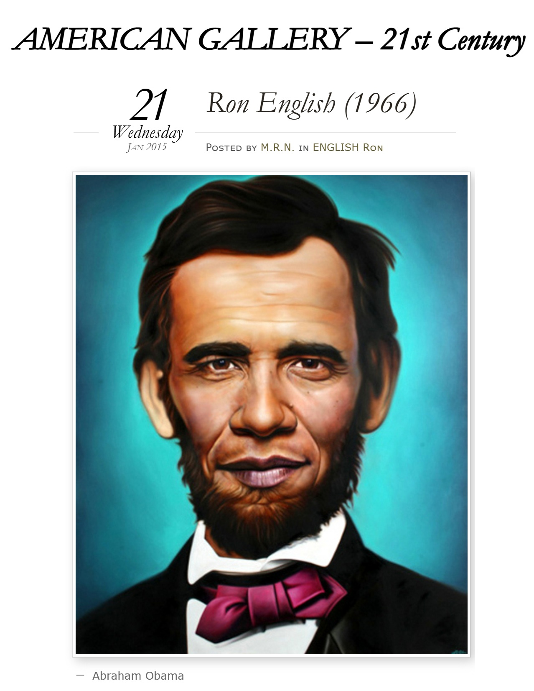

Literature
Don Goede, ed., Abraham Obama: A Guerrilla Tour Through Art and Politics (San Francisco, CA: Last Gasp of San Francisco; Colorado Springs, CO: Smokehouse Media, 2009), p. 74. ISBN 978-0867197228.
Ron English, Status Factory: The Art of Ron English (San Francisco: Last Gasp of San Francisco, 2014), p. 184. ISBN 978-0867197891.

Ron English, Original Grin: The Art of Ron English (Paris: Cernunnos, 2019), p. 129. ISBN 978-2374950938.

Pablo González, “Ron English: el hiperrealista al que McDonald’s odiaba,” MalaTinta Magazine, February 17, 2014. Online: MalaTinta Magazine.

“Ron English”, Blag Magazine; Sarah J. Edwards, vol. 3, no. 2009, 2009, p. 54.

“YES WE CAN | 13 May - 10 Jul 2009 - Overview”, Dorothy Circus Gallery, May 13–July 10, 2009.

Filgueiras, Mariana, “Ron English – Arte da Contestação”, O Globo, October 21, 2014.

Mural, “Interview with Ron English”, Mural Festiva Blog, no. November, 2018.


Notes
Artsy and MutualArt circulate this image online under the title Abraham Obama and describe the medium and dimensions differently; this catalogue record retains the supplied title, medium, dimensions, and 2008 date.
This composition was later adapted by the artist as a related giclée print issued as Abraham Obama (Electoral Map 2012); Art Collectorz describes the print as a 24 × 18 inch giclée in an edition of 44, signed and numbered, published by Popaganda on November 14, 2012.
The work also appears in online circulation through Artsy, MutualArt, Matthew Namour Gallery, and other Ron English overview pages.
Ancillary Documentation



Additional Online Circulation
Provenance
Private collection.